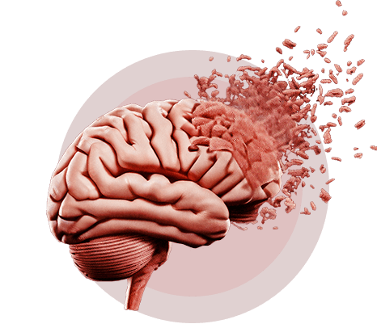
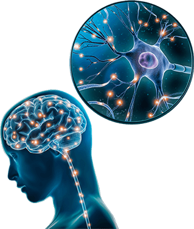
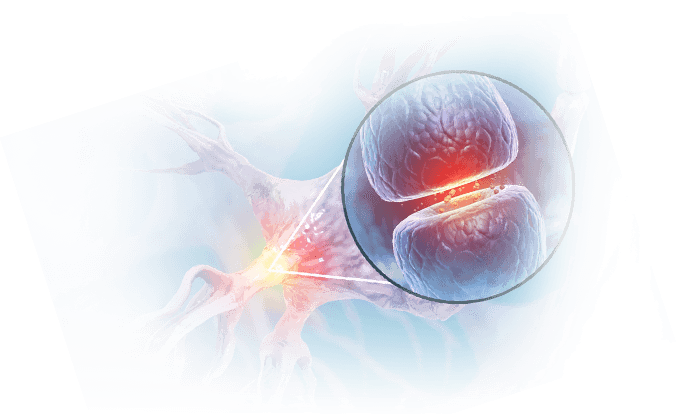
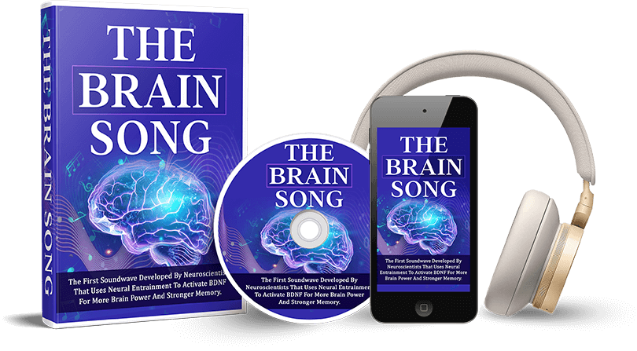

NASA-Trained Neuroscientist:
Do This 10-Second
Brain Trick
For Stronger Memory..
“16,366 Americans are enjoying a stronger memory with age using this safe, 10-second daily ritual, including my wife and my parents.”
- Dr. James Rivers, NASA-Trained Neuroscientist
-
NASA-Trained Neuroscientist makes a new discovery that boosts brain power and improves memory with age..
-
Find out why 16,366 Americans say the secret is a safe, proven 10-second ritual with your thumb that begins working the very first time you try it..
-
Breakthrough Harvard study confirms the secret is related to a “memory protein” that’s over 300,000 years old and sitting inside your brain right now..
Scientific References and Spiritual Studies:
HOW’S IT POSSIBLE to remember your wedding day but not where you left glasses?
The root of an aging brain comes down to the “memory protein”.1
You have this protein.
It’s in your brain.2
But if you’re over 50, your “memory protein” is already fading away.3
The more it fades, the weaker the memory.4
But the secret isn’t diet, exercise, pills or Sudoku.
It's a 10-second ritual at home to activate this “memory protein”.5
And you need your thumb to do it.
Think you know what it is?
I’d be surprised if you did..
The 10-Second At-Home Ritual.. Scientifically Verified At Harvard, Oxford and NASA.. For Stronger Memory With Age..
This “memory protein” is linked to better memory.7
Sharper thinking.
You learn faster.21
It protects brain cells from decline.23
The best part is this is how many aging scientists strengthen their memories.
Harvard’s now studying this “memory protein”.
So is Oxford, and NASA.9
But we’ve all been ignoring it.
So we’re going to activate it now because it’s not on YouTube or Google or any books on Amazon.
The 14-Day Harvard Study
You Never Heard About..
My name is Dr. James Rivers.

The breakthrough came to light when Harvard found a small group of 90-year old American’s who were sharper than 20-year olds.
And stay with me. This gets good.
Ever wonder why some people stay sharp as a whip into their 70’s and 80’s?
While others can’t remember where they left their car keys or recall a conversation they had?
3,300 research reports say the root of an aging brain is not everything we’ve been told.10
The Surprising Breakthrough That Baffled Harvard Experts..
New Harvard research reveals there’s a quiet group of Americans who live into their 90’s with no signs of cognitive decline..11
These undiscovered folks learn fast and think fast..
They rarely forget facts, names or stories..
Their fondest memories are safer!
The Journal of Neuroscience even found their brains were similar in size to people 50 years younger than them..12
That means their brains don’t even shrink like their peers..
“She’s 80 Years Old…But
Her Brain Looks Much Younger!”
As a neuroscientist of 34 years, I had to know HOW?
How come these SuperAgers don’t weaken with age?
The more I researched, the more I realized the answer is not about diet, exercise or even genetics..
It turns out if you look at a SuperAger’s brain with a PET scan, you can see what’s going on..
The NASA-Backed “Memory Protein”
That Supports A Better Memory At Any Age..
And what you see is SuperAger’s have surplus of a growth factor called BDNF..
In fact, these SuperAger’s have more BDNF than your average 20-year old..13
But when you look at the brain of a normal 70-year old, you see much weaker BDNF..14
But don’t rush to blame your age..
It turns out there’s something incredible going on in your brain right now with BDNF…
Let me show you:
BDNF: The Memory Protein
BDNF stands for Brain-Derived Neurotrophic Factor. It’s a very special protein sitting in your brain right now.15

Brain-derived neurotrophic factor (BDNF) is one of the most abundant and well-studied neurotrophins in mammalian brains. The name comes from the greek neuro for nerve, and trophis “pertaining to food, nourishment or growth”. BDNF is literally “the king of growth factors” for a stronger, healthier, sharper brain.
That means BDNF is the key “growth factor” for a stronger, healthier, sharper brain, and it’s why I call BDNF the “Memory Protein”, although Harvard’s top researcher Dr. John Ratey goes even further, calling it “Miracle-Gro” for brain power..16, 17, 18
But it gets better..
Imagine your brain is like a big city with roads and connections that help everyone get around and do their jobs.
Brain proteins like BDNF are the magical helpers that keep this city running smooth and sharp, by building new roads, fixing old ones and making sure that all the brain's workers, called neurons, stay strong and healthy so that your brain is working great for you..
NASA-Trained Memory Expert:
“This Memory Protein Boosts Recall, Reduces “Forgetful Moments” AND Grows New Brain Cells..”
But BDNF takes it even further..
BDNF actually grows NEW brain cells, making the city bigger, healthier and stronger, resulting in better memory..
And neuroscientists love BDNF..
Not only is more BDNF linked to better memory..19
But it enhances the creation of new memories, acting as the “bridge” from short-term to long-term memory..20 so BDNF is great for memory recall plus it reduces “forgetful moments”, thanks to the fact that BDNF slows “brain shrinkage”..21
I told you BDNF was wonderful, right?
But there’s more..
Plus.. It Protects The Brain By Slowing “Brain Shrinkage” And… Targeting Deadly Compounds That Can Harden In The Brain..
Researchers found BDNF makes you learn faster, by better connecting several regions of your brain together at the same time..22
Even more, BDNF also protects existing brain cells23 where your memories are stored..
It even boosts DNA repair by lowering brain inflammation and targeting harmful proteins that can harden in the brain..24
3,300 research studies with more coming out every month prove it: BDNF is a real key to stronger memory with age..
The Surprising Root Cause
Of An Sluggish Brain…
But the problem is so much of our modern world destroys our BDNF..
Stress, sugar, poor sleep and more all weaken our BDNF..26
But the #1 BDNF Killer is Father Time..
Around age 40, the brain begins to lose mass as BDNF declines..27
That means “brain shrinkage”, which is bad as it sounds..
Brain cells are dying off faster than they’re replaced.28
But it gets worse..
What Makes The Brain Feel Slow After 50..
BDNF Decline is also linked to a reduction in your brain’s connections, making learning and memory recall much harder..29
And although we know that patients diagnosed with brain diseases have low BDNF 30, 31, we now know that BDNF may also be reduced in healthy adults who are destined to develop issues later in life too..32,33, 34, 35, 36
The KEY Is To Activate The “Memory Protein”...
I want you to understand: The root of an foggy, forgetful brain is BDNF Decline..
Father Time stacked the deck against us, causing the key Memory Protein for a stronger brain to fade away as we age.
But they can turn it all around starting as soon as today. And so can you.
Here Are 6 Science-Backed Ways To Boost Your “Memory Protein” Starting Today..
Here’s the 6 best ways backed by science to boost your BDNF right now, with the very best saved for last:
1. Cardio.
4-5 hours per week of cardio has a really nice effect on BDNF.
Of course, not everyone can do 4-5 hours a week of hard cardio every week.37
2. Take an ice bath or sauna daily.
Daily sauna at 170 degrees or a daily ice bath is great for BDNF.
Of course, an in-home sauna will cost you $5,000 - $10,000. And ice baths are unfortunately reserved for the bravest of souls..38, 39
3. 4 hours of daily meditation, chanting & yoga.
This one is wild.
A UCLA study found 4 hours of daily meditation, chanting and yoga gave a great boost to BDNF.40
This is in-part why Tibetan monks don’t worry about cognitive decline. Almost no one there gets it.41 But how many of us have 4 hours a day to meditate and chant?
4. Eat more BDNF-boosting foods.

Here are the best ones: Dark chocolate, blueberries and extra virgin olive-oil! Have one serving of each a day.42
High-protein foods high in omega-3’s are great too, like wild salmon and sardines.43
And if you enjoy it, 1 cup of coffee per day can be helpful for BDNF too.44
5. Supplementation.
Some supplements have been shown to be good for BDNF, like acetylcholine and bacopa.45, 56
But the problem with supplements is twofold:
Many supplements don’t cross the blood brain barrier, so you don’t get the benefits. And they’re expensive. To get what you need, it’s usually around $200 a month or more. And then you have to keep paying month after month, forever.
6. You can use a
special soundwave.
Top Brain Expert:
My #1 FAVORITE Way To Boost Your BDNF Starting Immediately..
This is the easiest way by far and I have the ideal soundwave for you but let me tell you why..
When my colleagues and I began researching the most effective way to boost your BDNF, we wanted something that was simple, easy and that you could do at-home..
And we knew the solution would be unique, because this hasn’t existed until now..
We wondered, did a solution like that even exist?
The answer is YES but the breakthrough didn’t happen in America..
The brain research was done in Shaanxi, China..
Shaanxi is famous for being home to one of the worst earthquakes in human history, recorded in 1556 for killing nearly 1 million people..
But God never wastes a pain, and all that destruction led to this groundbreaking discovery just last year..
This Special Frequency Activates The “Memory Protein”...
These researchers found activating the brain at a special frequency by using neural entrainment was like a “light switch” for BDNF..47
All it took was 17 short minutes for this special frequency to increase by BDNF by a significant margin.
And we’ve found the best way to tune in to this special frequency is with a special soundwave..
Why? Because the soundwave activates the brain regions responsible for BDNF..
So BDNF is activated within minutes, from the very first listen…48
The secret is that we’re using the same soundwave technology that everyone from NASA to Beijing is currently using..
That’s why my colleagues and I began calling it the “Brain Song”...
Imagine getting the brain-boosting benefits of cardio, ice baths, meditation, sauna and supplements by simply laying back and enjoying this special “brain song” instead..
We called this breakthrough 17-minute soundwave “the Brain Song” and turned it into a Digital Audio Track anyone could listen to right now..
So far, it’s helped 16,366 everyday Americans enjoy a stronger, sharper brain with age..
The Brain Song is the first soundwave developed by neuroscientists that uses neural entrainment to activate BDNF for more brain power and stronger memory..
It works by activating the key regions responsible for BDNF..
Plus it’s simple, easy and you can do it at-home:
Just lay back with a pair of headphones and relax listening to the calming soundwave..
Beneath your awareness, the special frequency will begin boosting your BDNF by connecting several key regions of your brain to each other..49
You’ll do it from the privacy of your own home.
And you don’t need to meditate, chant a mantra or write anything down.
You listen to the special soundwave just once per day as it synchronizes with your brain and activates your BDNF..
The result is a sharper mind that gets stronger with age..50,51
Over 50?
Join The Men And Women Now Enjoying
A Stronger Memory Since Activating Their BDNF With The Brain Song…
Many customers report the Brain Song makes them feel like they’re back
in the game of life. You’ll notice you feel in control again, with sharper,
clearer thinking.
As you listen more each day, the brain grows stronger and new abilities unlock. You’ll automatically start thinking bigger about your life. And you’ll notice a sense of easy confidence in your quest for amazing health, amazing relationships, amazing career.

And since BDNF boosts brain power, you’ll find you’re able to grasp a new idea or read a new book much faster than before.52 People may comment that you seem extra-sharp or smarter.
And you may notice you feel even more optimistic about life, since Vanderbilt is studying BDNF right now for its mood-boosting powers.53
Best of all, BDNF strengthens the connections across the brain, which are directly linked to your powers of recall.54
Forgetting names, dates or facts is no longer a concern as the brain fog clears away. Your brain is much stronger and more resistant to decline as your memory improves with age.55
Here’s 25 More Benefits
Brain Song Customers Report
That Transform Your Health,
Finances And Relationships..
The Brain Song is much easier than hours of exercise and meditation, and much more affordable than spending $200 every month on more supplements.
It’s time for you to experience life with the brain power nature had in mind for you before Father Time and our modern way of life deactivated it.
-
Just imagine feeling alert and clear-headed from sunrise to bedtime.
-
Imagine grasping a new idea the first time you hear it, even though it takes others days or weeks to get it.
-

Imagine the amazement of a family member as you quickly recall important names, dates and stories.
-
Imagine the look on a friend’s face as you handle a difficult conversation with ease because the right words now come to you.
Suddenly your mind is clear and you feel joy as you spend more time with your family and loved ones because you’re giving yourself the same advantage that Harvard’s incredible SuperAger’s have.
Your BDNF is activated, your mind feels sharper, your memory is better and you feel alive, creative, excited to live each day to its fullest again.
That’s the life you deserve and you can have it all today when you claim your copy of The Brain Song.
“How Much Is It To Activate BDNF With The Brain Song Today?”
By now, you should realize that I take great pride in the work that I do as one of America’s most diligent neuroscientists. My reputation is everything, and I would only ever attach my name to a product if I 100% believe in it.
Bottom line is a lot of time and money goes into this research. However, when you compare the time the Brain Song takes to the months of time that hard cardio & meditation takes.. or when you compare the price to the expensive supplements out there which you have to keep paying for month after month, it will seem like a bargain.
And given the transformation that activating your BDNF can have on your life, we could easily offer this at a very high price. Think about it.
- How much would you be willing to invest to feel alert and clear-headed from sunrise to bedtime?
- How much would you pay to be so sharp that your finances improve?
- What about impressing everyone by quickly recalling key facts and interesting stories?
- What if forgetting names was no longer a concern?
- What about impressing everyone by quickly recalling key facts and interesting stories?
- Think about the power and control you’re going to feel. What would you be willing to spend for this kind of transformation? $200? $300? $500?
- How much has it cost you in your lifetime struggling to get what you want?
Because remember what the Cleveland Clinic said: After 40, brain cells begin dying off faster than they’re replaced.57
By activating BDNF, you’re actually supportig the growth of new brain cells. Key brain regions are thriving.58,59,60
Many of my colleagues have suggested that this product would be an incredible value even at $500.
$200 $100
And for a limited time only, I’d like to offer you the Brain Song for just $17,90.
That’s another $10 off.
This Is The Only Place
To Get The Brain Song..
And remember, this deal is not available on Amazon or anywhere else. The only way to get the Brain Song for this incredible price is right from this page.
And you should know that I’m not going to limit the amount of time you can keep the Brain Song either. It’ll be yours forever.
Claim Your Discount And Click The Button Below Right Now.
Neuroscientist Recommended…

The Brain Song Is GUARANTEED To Work - Or You PAY NOTHING! SEE How Your Stronger Memory And Sharper Brain Power Transform, Then Decide To Keep It Or Not..
To prove this research-backed soundwave works and make this a 100% no-brainer for you to check out, I'm going to guarantee your order today for a full 90 days. It's a 100% ironclad money backed guarantee based on your complete satisfaction with your experience.
That means you don't even need to make a decision right now. Just say maybe, and you'll have a full 90 days to test it out for yourself.
Watch as problems are suddenly solved with an insight that automatically bubbles up for you. Watch as things naturally fall into place, with less effort and more ease. Watch as finances improve, as relationships improve, as grades improve. See how others praise your new power and confidence, and ask your secret. Then decide if you want to keep it or not.
Simply Try The Brain Song
Risk-FREE For 90 Days..
The truth is 90 days is incredibly generous as most people who listen everyday for 12 minutes begin to see results within a couple weeks.
But as a scientist, putting my credibility on the line, it's important to me you feel complete confidence in our product and saying yes to giving this a shot.
It doesn't matter how many times you’ve used it, you'll get all your money back if you don't get these results.

I can't feel good keeping your money. I work with the friendliest customer support team who are easy to get ahold of and are on standby to answer any questions you have.
I urge you to check out today for maximum savings.
All you need to do to claim this incredible discount and take advantage of this risk-free offer is to click the button below and check out to begin activating your BDNF, the Memory Protein, for a stronger memory.
There's simply no risk to you. The only risk you could possibly face is the one of pain and regret that you missed out on experiencing this life changing product when you had the chance.
Go Ahead And Complete Your Checkout Below And Experience Everything I've Talked About 100% Risk Free Right Now. So Just Go Ahead And Click The Button Below.
Neuroscientist Recommended…
Activate Your BDNF
(90-Day Money Back Guarantee)
“Is The Brain Song Still Available?”
If the Brain Song is still available, then the order page will appear and you can enter your information. If not, you'll have a chance to add yourself to our waiting list and we'll let you know if this product becomes available again later.
Remember, you’ll save the most money when you order with today’s discount, and not risk missing out.
The order form is fully protected using the very latest 256 bid SSL encryption for total privacy and protection. It's the same security that major e-commerce giants like Amazon.com use.
Just enter your order information and your Digital Audio Track will be emailed to you in a matter of minutes, depending on how fast you can enter your information on the next page.
And because it’s digital, there’s no shipping fees or waiting for a physical package to be mailed to your house.
And that’s not all you’ll get when you place your order today..
Just Added! Get $197.00 In Free Gifts And Bonuses When You Order Today…
Your 1st FREE Gift:
Get The Best-Selling “1-Minute Memory Saver” FREE!
FREE
BONUS
#1
First is The 1-Minute Memory Saver!
This 1-minute trick is simple and fun! You use it anytime you learn something new that you want stored permanently in your long-term memory. Do it from home, while waiting in line or anywhere else. It’s scientifically-proven to lock your new lesson into your memory the very first time you try it.
Your 2nd FREE Gift:
Get The 15 Delicious Memory Smoothies Report FREE!
FREE
BONUS
#2
Second is called 15 Delicious Memory Smoothies. What do doctors put in their smoothies? With these 15 Memory Smoothies, you’ll discover 15 tasty, easy-to-make smoothies using simple foods from the grocery to feed your brain the key nutrients it needs most.
Your 3rd FREE Gift:
Get The “5 Most Important Habits
For Stronger Memory” Infographic FREE!
FREE
BONUS
#3
Your 3rd free bonus for checking out today is a beautifully designed infographic that reminds you of the 5 most important habits for a stronger memory with age, based on the most recent 2024 studies. Just print it out and hang it up.
If You Have Two Ears and 17 Minutes, Your Life Can Transform..
I urge you to take a stand today and say that you are no longer willing to accept a life that’s anything less than what you truly want for yourself and your family. Click the button below to claim your copy of the Brain Song.
There’s only one favor I ask and that is this. When you see the results this gives you, let us know. Send us an email. I’m excited to hear from you!
Now it’s up to you. You can risk carrying on as you’ve been, or you can try the Brain Song risk-free for 90 days. You have absolutely nothing to lose, and a whole incredible way of life to gain.
I guarantee you'll be satisfied. If not, you don't pay a single penny.
As a neuroscientist with 34 years experience, it wouldn't feel right keeping your money unless you get each and every benefit you deserve and truly achieve the success you deserve. It's not just a policy, but my personal guarantee. It's that simple.
Claim your discount. Just click the button below and the Brain Song will be emailed to you immediately.
Neuroscientist Recommended…
Activate Your BDNF
(90-Day Money Back Guarantee)
Frequently Asked Questions About The Brain Song…
Still watching? Still making your decision? Ever since we've released this product, we've got all kinds of interest in the Brain Song with people emailing in and asking questions. So I'm just going to answer a few of the most common questions while you're sitting there deciding to claim your own copy.
Q1 The first question is from Luann Hull in Austin, Texas who asks,
“What makes the Brain Song superior to cardio, brain games or brain supplements?”
Cardio is great for BDNF but in the studies, people are doing 4-5 hours of hard cardio a week, every week. Not everyone can stick to that. I don’t myself.61
Then there’s meditation, chanting and yoga which are great too but the people in those studies were doing it for 4 hours a day, everyday too.62 Most people just don’t have 4 hours a day for this stuff, nor do they need to if they’re listening to the Brain Song.
And the problem with supplements is not just that it’s costing you $50-100 per month, every month, forever. It’s also that many compounds don’t cross the blood-brain barrier, so you don’t actually get the benefits.
But what about brain games? Surprisingly, the research shows these brain games do little to slow mental decline. In fact, the biggest Sudoku study ever found that Sudoku had no noticeable effect on slowing cognitive decline. It turns out, the only benefit you get from Sudoku is that you get better at Sudoku.63
In fact, research shows the best “exercise” for memory is actually learning a new language.64 The cognitive effect of a new language physically changes the structure of your brain. Try French, Portuguese or even Mandarin. Your friends will be amazed.
Customers love the Brain Song because it’s not hours of hard cardio or time-intensive brain games. It’s only 17 minutes per day. Everyone can find 17 minutes a day to pop on a pair of headphones and relax listening to the special soundwave. It begins working the very first time you listen to it, as the special frequency activates your BDNF supporting an improved memory and sharper mind that gets stronger with age..
Q2 Gloria Vaughn from San Jose asks,
“How exactly do I use the Brain Song?”
Great question. Listening to the Brain Song is simple, easy and you can do it at-home as soon as today: Just download the Digital Audio Track to your phone or computer.
All the technology is already programmed onto the Track for you, and will begin activating your BDNF by using the science-backed special frequency.
Just relax and listen. After 17 minutes, the audio track will finish and you’ll be done. That’s it.
No exercises. No pills. No writing anything down.
You can even listen to it in the car, on a walk, or while you’re shopping, cooking, reading or just relaxing in the backyard. In fact, research has found both sunlight and walking are positively linked with more BDNF. So one of my favorite ways to use the Brain Song is to listen to it while going for a walk when it’s sunny.65
And what if you miss a day? It’s okay, and not the end of the world if you do. Just aim to listen everyday for those 17 minutes. The benefits increase every time you listen. And the result is activated BDNF and all the remarkable benefits that come with it.
Q3 The next email comes from James Munger in Fort Lauderdale. He says,
“How fast will I see results?”
Everybody is different.
Overall, many of our customers start to notice a difference, like feeling alert and clear-headed all day, grasping new ideas quickly, even when it takes others much longer to get it, or improved memory within the first 2 weeks. Some people even say they feel they have more brain power now than they did 10 or 20 years ago.
Other changes, like learning faster and improved recall, may happen over time in the coming weeks and months.
As you listen more each day, the brain grows stronger and new abilities unlock. You focus easier. You remember more. The right words are now there for you as you need them in conversation.
And even though many of these improvements will happen in the first month, the benefits will continue as you keep listening for those 17 minutes a day.
After a few months, you might notice you feel like an entirely new person.
Remember, the best way to see and truly find out what benefits are in store for you is just to click the button below and check out. You're always protected by our industry leading 90 day 100% satisfaction guarantee.
Q4 Angela Brooks from Jacksonville emails and asks,
“Are there any side effects? Is the Brain Song safe to use long-term?”
I made a vow when I started my career that I would never recommend a product I wouldn't personally recommend to a loved one, which is why my parents, my wife and her parents all use the Brain Song.
The Brain Song has been used by thousands of Americans with zero reported side effects. It’s not a drug or pill. It’s a special frequency that’s been studied at Harvard, NASA and Beijing and is now being used by thousands of Americans with stacks and stacks of 5-star reviews.66, 67, 68
Q5 Jerome Hines from Plano, Texas asks,
“Will the Brain Song help me in my career?”
How important do you think your brain power is for your career?
Think about it. How do you rise up the ladder in your career? How do you land the promotion or sign the client or secure that pay raise? You do it by providing more value with great insights that no one else does, by being able to spot trends and see things in ways others can’t, and capitalizing on those opportunities. That’s all brain power.
And don’t you think increased creativity helps too? Well, a remarkable study from Frontiers In Human Neuroscience found the special frequency in the Brain Song made less creative people more creative in only 3 minutes.69
It’s a fact of life: People who learn faster, read faster and think clearer tend to have much more productive careers. I really hope you get the chance to experience it for yourself.
Q6 Julie Aman from Costa Mesa, California asked,
“Do I need to change my diet or eat special foods to get the benefits of the Brain Song?”
No, you do not.
You may have seen videos or articles telling you certain foods “kill” your memory. Or that you should eat certain superfoods for memory. All these things are fine, and they may help a little. For example, microwave popcorn contains diacetyl which has been shown to increase amyloid plaque.70 Diacetyl is in chips and crackers too. So let’s say you never eat popcorn, chips or crackers again. What about the BDNF Decline that’s already happening in the brain? You see, none of these things are addressing the root cause, which is why you see so much conflicting information, much of which ends up harming your health and brain when all you’re trying to do is take care of yourself!
The internet has become a maze and I’m sorry that you even have to deal with all of it. You’re just trying to do the best thing for your brain, your health and your family, and I applaud you for that.
Q7 Rachel Jackson from Philadelphia emails and says,
“Should I do the Brain Song with other things too, like brain exercises and meditation?”
Sure you can! But only do them because you enjoy them. Not because you expect them to activate your BDNF the way the Brain Song does.
The leading BDNF study on meditation and yoga found you had to do it for 4 hours a day to get comparable results.
Imagine getting the memory and brain-boosting benefits of 4 hours of daily yoga and meditation by simply laying back and enjoying this special song.
And when you get your copy of the Brain Song by checking out today, you’ll love how simple it is. All the technology is already programmed onto the Track, as the special frequency activates BDNF, the "Memory Protein", for you, so there’s nothing you have to “do”. Just enjoy the special song. After 17 minutes, the audio track will finish and you’ll be done. That’s it.
Q8 Juan Torres asks,
“How fast do I get access to the Brain Song?”
The Brain Song is emailed to you immediately, as soon as you complete your order.
Because it’s a Digital Audio Track, you don’t have to wait for a physical package to be mailed to your home which also means you don’t have to pay any shipping.
You’re going to begin activating your BDNF today with the Brain Song, just as soon as you can click the button below and enter your information on the secure checkout page.
Q9 Julie Morrow from Billings asks,
“Is the Brain Song available anywhere else for a lower price?
Can I find the audio sound tracks on YouTube or Spotify?”
We only offer the Brain Song direct through this website for a very important reason. I was approached by a large publisher to offer the Brain Song through them. If I did that, the markup they required would make the price at least double what it is now for our customers. All that extra markup makes no sense. It’s just added to subsidize all of their overhead and advertising costs, as well as put extra profit in their pockets which would be pointless since you can already order the Brain Song from the comfort of your home directly from this website.
I was also concerned they might “water down” the technology we developed and placed in the Brain Song audio, which cannot be found anywhere else, including on YouTube or Spotify. In fact, we studied the few tracks offered on those websites and the results were disappointing. For many of them, there was no special technology embedded in the audio sounds at all. They just tell you that to get clicks and ad revenue.
Also please keep in mind the price is set to increase as well but I'm still fighting to keep it affordable for the people who need it most. So this $17,90 price is not guaranteed beyond today. The last thing I want is for you to come back later and see higher prices or worse, find out the Brain Song is no longer available for purchase.
Since the release of this product, requests for my time have increased dramatically. With the increased demand on my schedule, I am certain I will not be offering this online forever. Time really is running out. Don’t spend another day dealing with the frustration that comes from feeling like your incredible mind is slipping when the solution is literally a click away. Claim your discount and click the button below right now.
Q10 Okay and the last question is,
“Is there a guarantee?”
Of course! Your order is fully guaranteed.
When you place your order from this website, you’re backed by our 90-Day 100% Money Back Guarantee. It’s a 100% Ironclad Money Back Guarantee based on your complete satisfaction with your experience.
That means you don't even need to make a decision right now. Just say maybe, and you'll have a full 90 days to test it out for yourself.
As a scientist, putting my credibility on the line, it's important to me you feel complete confidence in our product and saying yes to giving this a shot. It doesn't matter how many times you’ve used it, you'll get all your money back. If you don't get these results, I can't feel good keeping your money.
I work with the friendliest customer support team who are easy to get ahold of and are on standby to answer any questions you have.
All you need to do to claim this incredible discount and take advantage of this 100% risk-free offer is to click the button below and check out to begin activating your BDNF with the Brain Song.
Claim Your Discount And Click The Button Below Right Now.
Neuroscientist Recommended…
Activate Your BDNF
(90-Day Money Back Guarantee)
Scientific References:
- 1.Sun, F. W., Stepanovic, M. R., Andreano, J., Barrett, L. F., Touroutoglou, A., & Dickerson, B. C. (2016). Youthful Brains in Older Adults: Preserved Neuroanatomy in the Default Mode and Salience Networks Contributes to Youthful Memory in Superaging. The Journal of neuroscience: the official journal of the Society for Neuroscience, 36(37), 9659–9668. https://doi.org/10.1523/JNEUROSCI.1492-16.2016
- 2.Bathina, S., & Das, U. N. (2015). Brain-derived neurotrophic factor and its clinical implications. Archives of medical science : AMS, 11(6), 1164–1178. https://doi.org/10.5114/aoms.2015.56342
- 3.Miranda, M., Morici, J. F., Zanoni, M. B., & Bekinschtein, P. (2019). Brain-Derived Neurotrophic Factor: A Key Molecule for Memory in the Healthy and the Pathological Brain. Frontiers in cellular neuroscience, 13, 363. https://doi.org/10.3389/fncel.2019.00363
- 4.Yang, T., Nie, Z., Shu, H., Kuang, Y., Chen, X., Cheng, J., ... & Liu, H. (2020). The role of BDNF on neural plasticity in depression. Frontiers in cellular neuroscience, 14, 82.
- 5.Zhang, X., Feng, D., Barry, D., & Li, J. (2024). Closed-loop control of gamma oscillations in the brain connections through the transcranial stimulations. arXiv preprint arXiv:2403.06794
- 6.Collins, E. M. (2018). Super Ager: You Can Look Younger, Have More Energy, a Better Memory, and Live a Long and Healthy Life. Mango Media Inc.
- 7.Bekinschtein, P., Cammarota, M., Katche, C., Slipczuk, L., Rossato, J. I., Goldin, A., Izquierdo, I., & Medina, J. H. (2008). BDNF is essential to promote persistence of long-term memory storage. Proceedings of the National Academy of Sciences of the United States of America, 105(7), 2711–2716. https://doi.org/10.1073/pnas.0711863105
- 8.Suppa, A., & Cheeran, B. (2014). Further insights into the effect of BDNF genotype on non-invasive brain stimulation. Clinical Neurophysiology: Official Journal of the International Federation of Clinical Neurophysiology, 126(7), 1281-1283.
- 9.Schmidt, M. A., & Goodwin, T. J. (2014, January). Protecting Neural Structures and Cognitive Function During Prolonged Space Flight by Targeting the Brain Derived Neurotrophic Factor Molecular Network. In 2015 NASA Human Research Program Investigators''Workshop (HRP IWS 2015) (No. JSC-CN-32241).
- 10.Solan, M. (2022, September 1). The mental powers of super-agers. Harvard Health. https://www.health.harvard.edu/mind-and-mood/the-mental-powers-of-super-agers
- 11.Super-agers: This Special Group of older adults suggests you can keep your brain young and spry. Harvard Health. (2017, July 5). https://www.health.harvard.edu/blog/super-agers-this-special-group-of-older-adults-suggests-you-can-keep-your-brain-young-and-spry-2017070511957
- 12.Sun, F. W., Stepanovic, M. R., Andreano, J., Barrett, L. F., Touroutoglou, A., & Dickerson, B. C. (2016). Youthful Brains in Older Adults: Preserved Neuroanatomy in the Default Mode and Salience Networks Contributes to Youthful Memory in Superaging. The Journal of neuroscience: the official journal of the Society for Neuroscience, 36(37), 9659–9668. https://doi.org/10.1523/JNEUROSCI.1492-16.2016
- 13.Sanchez-Roman, I., Ferrando, B., Holst, C. M., Mengel-From, J., Rasmussen, S. H., Thinggaard, M., Bohr, V. A., Christensen, K., & Stevnsner, T. (2022). Molecular markers of DNA repair and brain metabolism correlate with cognition in centenarians. GeroScience, 44(1), 103–125. https://doi.org/10.1007/s11357-021-00502-2
- 14.Sanchez-Roman, I., Ferrando, B., Holst, C. M., Mengel-From, J., Rasmussen, S. H., Thinggaard, M., Bohr, V. A., Christensen, K., & Stevnsner, T. (2022). Molecular markers of DNA repair and brain metabolism correlate with cognition in centenarians. GeroScience, 44(1), 103–125. https://doi.org/10.1007/s11357-021-00502-2
- 15.Bathina, S., & Das, U. N. (2015). Brain-derived neurotrophic factor and its clinical implications. Archives of medical science : AMS, 11(6), 1164–1178. https://doi.org/10.5114/aoms.2015.56342
- 16.Binder, D. K., & Scharfman, H. E. (2004). Brain-derived neurotrophic factor. Growth factors (Chur, Switzerland), 22(3), 123–131. https://doi.org/10.1080/08977190410001723308
- 17.Bathina, S., & Das, U. N. (2015). Brain-derived neurotrophic factor and its clinical implications. Archives of medical science : AMS, 11(6), 1164–1178. https://doi.org/10.5114/aoms.2015.56342
- 18.BDNF: How meditation may prevent a*******'s & d******a. EOC Institute. (n.d.). https://eocinstitute.org/meditation/bdnf-how-meditation-prevents-a*******'s-disease-d******a/
- 19.Bekinschtein, P., Cammarota, M., Katche, C., Slipczuk, L., Rossato, J. I., Goldin, A., Izquierdo, I., & Medina, J. H. (2008). BDNF is essential to promote persistence of long-term memory storage. Proceedings of the National Academy of Sciences of the United States of America, 105(7), 2711–2716. https://doi.org/10.1073/pnas.0711863105
- 20.Bekinschtein, P., Cammarota, M., Katche, C., Slipczuk, L., Rossato, J. I., Goldin, A., Izquierdo, I., & Medina, J. H. (2008). BDNF is essential to promote persistence of long-term memory storage. Proceedings of the National Academy of Sciences of the United States of America, 105(7), 2711–2716. https://doi.org/10.1073/pnas.0711863105
- 21.Kowiański, P., Lietzau, G., Czuba, E., Waśkow, M., Steliga, A., & Moryś, J. (2018). BDNF: A Key Factor with Multipotent Impact on Brain Signaling and Synaptic Plasticity. Cellular and molecular neurobiology, 38(3), 579–593. https://doi.org/10.1007/s10571-017-0510-4
- 22.Kowiański, P., Lietzau, G., Czuba, E., Waśkow, M., Steliga, A., & Moryś, J. (2018). BDNF: A Key Factor with Multipotent Impact on Brain Signaling and Synaptic Plasticity. Cellular and molecular neurobiology, 38(3), 579–593. https://doi.org/10.1007/s10571-017-0510-4
- 23.Hu, B., Nikolakopoulou, A. M., & Cohen-Cory, S. (2005). BDNF stabilizes synapses and maintains the structural complexity of optic axons in vivo.
- 24.Sanchez-Roman, I., Ferrando, B., Holst, C. M., Mengel-From, J., Rasmussen, S. H., Thinggaard, M., Bohr, V. A., Christensen, K., & Stevnsner, T. (2022). Molecular markers of DNA repair and brain metabolism correlate with cognition in centenarians. GeroScience, 44(1), 103–125. https://doi.org/10.1007/s11357-021-00502-2
- 25.Weinstein, G., Beiser, A. S., Choi, S. H., Preis, S. R., Chen, T. C., Vorgas, D., Au, R., Pikula, A., Wolf, P. A., DeStefano, A. L., Vasan, R. S., & Seshadri, S. (2014). Serum brain-derived neurotrophic factor and the risk for d******a: the Framingham Heart Study. JAMA neurology, 71(1), 55–61. https://doi.org/10.1001/jamaneurol.2013.4781
- 26.Molteni, R., Barnard, R. J., Ying, Z., Roberts, C. K., & Gómez-Pinilla, F. (2002). A high-fat, refined sugar diet reduces hippocampal brain-derived neurotrophic factor, neuronal plasticity, and learning. Neuroscience, 112(4), 803-814.
- 27.Payton, L. T. (2024, June 14). Your brain starts shrinking after 30. what you need to do next to Keep your mind sharp and clear. Fortune Well. https://fortune.com/well/2023/06/03/brain-shrinking/
- 28.Kowiański, P., Lietzau, G., Czuba, E. et al. BDNF: A Key Factor with Multipotent Impact on Brain Signaling and Synaptic Plasticity. Cell Mol Neurobiol 38, 579–593 (2018). https://doi.org/10.1007/s10571-017-0510-4
- 29.Xue, B., Waseem, S. M. A., Zhu, Z., Alshahrani, M. A., Nazam, N., Anjum, F., ... & Sharma, M. (2022). Brain-derived neurotrophic factor: a connecting link between nutrition, lifestyle, and A*******'s disease. Frontiers in Neuroscience, 16, 925991.
- 30.Ng, T. K. S., Ho, C. S. H., Tam, W. W. S., Kua, E. H., & Ho, R. C. (2019). Decreased Serum Brain-Derived Neurotrophic Factor (BDNF) Levels in Patients with a********'s Disease (AD): A Systematic Review and Meta-Analysis. International journal of molecular sciences, 20(2), 257. https://doi.org/10.3390/ijms20020257
- 31.Budni, J., Bellettini-Santos, T., Mina, F., Garcez, M. L., & Zugno, A. I. (2015). The involvement of BDNF, NGF and GDNF in aging and a********'s disease. Aging and disease, 6(5), 331–341. https://doi.org/10.14336/AD.2015.0825
- 32.Lee, J. G., Shin, B. S., You, Y. S., Kim, J. E., Yoon, S. W., Jeon, D. W., Baek, J. H., Park, S. W., & Kim, Y. H. (2009). Decreased serum brain-derived neurotrophic factor levels in elderly korean with d******a. Psychiatry investigation, 6(4), 299–305. https://doi.org/10.4306/pi.2009.6.4.299
- 33.Laske, C., Stransky, E., Leyhe, T., Eschweiler, G. W., Maetzler, W., Wittorf, A., ... & Schott, K. (2007). BDNF serum and CSF concentrations in A*******'s disease, normal pressure hydrocephalus and healthy controls. Journal of psychiatric research, 41(5), 387-394.
- 34.Forlenza, O. V., Diniz, B. S., Teixeira, A. L., Ojopi, E. B., Talib, L. L., Mendonça, V. A., … Gattaz, W. F. (2010). Effect of brain-derived neurotrophic factor Val66Met polymorphism and serum levels on the progression of mild cognitive impairment. The World Journal of Biological Psychiatry, 11(6), 774–780. https://doi.org/10.3109/15622971003797241
- 35.Diniz, B. S., & Teixeira, A. L. (2011). Brain-derived neurotrophic factor and a********'s disease: physiopathology and beyond. Neuromolecular medicine, 13(4), 217–222. https://doi.org/10.1007/s12017-011-8154-x
- 36.Nilsson, J., Ekblom, Ö., Ekblom, M. et al. Acute increases in brain-derived neurotrophic factor in plasma following physical exercise relates to subsequent learning in older adults. Sci Rep 10, 4395 (2020). https://doi.org/10.1038/s41598-020-60124-0
- 37.Glazachev, O. S., Zapara, M. A., Dudnik, E. N., Samartseva, V. G., & Susta, D. (2020). Repeated hyperthermia exposure increases circulating Brain Derived Neurotrophic Factor levels which is associated with improved quality of life, and reduced anxiety: A randomized controlled trial. Journal of Thermal Biology, 89, 102482.
- 38.Seager, T. (2024, July 4). How to boost your brain: Morozko ice bath science. Morozko Forge. https://www.morozkoforge.com/post/ice-bath-brain-health-1#:~:text=Whole%20body%20cold%20water%20immersion,and%20better%20brain%20blood%20flow
- 39.Glazachev, O. S., Zapara, M. A., Dudnik, E. N., Samartseva, V. G., & Susta, D. (2020). Repeated hyperthermia exposure increases circulating Brain Derived Neurotrophic Factor levels which is associated with improved quality of life, and reduced anxiety: A randomized controlled trial. Journal of Thermal Biology, 89, 102482.
- 40.Cahn, B. R., Goodman, M. S., Peterson, C. T., Maturi, R., & Mills, P. J. (2017). Yoga, Meditation and Mind-Body Health: Increased BDNF, Cortisol Awakening Response, and Altered Inflammatory Marker Expression after a 3-Month Yoga and Meditation Retreat. Frontiers in human neuroscience, 11, 315. https://doi.org/10.3389/fnhum.2017.00315
- 41.Huang, F., Shang, Y., Luo, Y., Wu, P., Huang, X., Tan, X., Lu, X., Zhen, L., & Hu, X. (2016). Lower Prevalence of a********'s Disease among Tibetans: Association with Religious and Genetic Factors. Journal of a********'s disease : JAD, 50(3), 659–667. https://doi.org/10.3233/JAD-150697
- 42.Gómez-Pinilla F. (2008). Brain foods: the effects of nutrients on brain function. Nature reviews. Neuroscience, 9(7), 568–578. https://doi.org/10.1038/nrn2421
- 43.Zeeni, N., Haidar, E. A., Azar, A., Ghanem, A., Bassil, K., Bassil, M., & Sleiman, S. (2017). The combinatory effects of diet and exercise on BDNF gene expression. The FASEB Journal, 31, 150-8.
- 44.Sangiovanni, E., Brivio, P., Dell'Agli, M., & Calabrese, F. (2017). Botanicals as Modulators of Neuroplasticity: Focus on BDNF. Neural plasticity, 2017, 5965371. https://doi.org/10.1155/2017/5965371
- 45.Hasselmo, M. E., & Bower, J. M. (1993). Acetylcholine and memory. Trends in neurosciences, 16(6), 218–222. https://doi.org/10.1016/0166-2236(93)90159-j
- 46.Walker, E. A., & Pellegrini, M. V. (2023). Bacopa monnieri. In StatPearls. StatPearls Publishing.
- 47.Zhang, X., Feng, D., Barry, D., & Li, J. (2024). Closed-loop control of gamma oscillations in the brain connections through the transcranial stimulations. arXiv preprint arXiv:2403.06794.
- 48.Ross, B., & Lopez, M. D. (2020). 40-Hz Binaural beats enhance training to mitigate the attentional blink. Scientific reports, 10(1), 7002. https://doi.org/10.1038/s41598-020-63980-y
- 49.Zhang, X., Feng, D., Barry, D., & Li, J. (2024). Closed-loop control of gamma oscillations in the brain connections through the transcranial stimulations. arXiv preprint arXiv:2403.06794.
- 50.Kowiański, P., Lietzau, G., Czuba, E., Waśkow, M., Steliga, A., & Moryś, J. (2018). BDNF: A Key Factor with Multipotent Impact on Brain Signaling and Synaptic Plasticity. Cellular and molecular neurobiology, 38(3), 579–593. https://doi.org/10.1007/s10571-017-0510-4
- 51.Hu, B., Nikolakopoulou, A. M., & Cohen-Cory, S. (2005). BDNF stabilizes synapses and maintains the structural complexity of optic axons in vivo.
- 52.Kowiański, P., Lietzau, G., Czuba, E., Waśkow, M., Steliga, A., & Moryś, J. (2018). BDNF: A Key Factor with Multipotent Impact on Brain Signaling and Synaptic Plasticity. Cellular and molecular neurobiology, 38(3), 579–593. https://doi.org/10.1007/s10571-017-0510-4
- 53.Lisa M. Monteggia, ph.D.. Lisa M. Monteggia, Ph.D. | Brain & Behavior Research Foundation. (2023, May 25). https://bbrfoundation.org/about/people/lisa-m-monteggia-phd
- 54.Bekinschtein, P., Cammarota, M., Katche, C., Slipczuk, L., Rossato, J. I., Goldin, A., Izquierdo, I., & Medina, J. H. (2008). BDNF is essential to promote persistence of long-term memory storage. Proceedings of the National Academy of Sciences of the United States of America, 105(7), 2711–2716. https://doi.org/10.1073/pnas.0711863105
- 55.Weinstein, G., Beiser, A. S., Choi, S. H., Preis, S. R., Chen, T. C., Vorgas, D., Au, R., Pikula, A., Wolf, P. A., DeStefano, A. L., Vasan, R. S., & Seshadri, S. (2014). Serum brain-derived neurotrophic factor and the risk for d******a: the Framingham Heart Study. JAMA neurology, 71(1), 55–61. https://doi.org/10.1001/jamaneurol.2013.4781
- 56.Sanchez-Roman, I., Ferrando, B., Holst, C. M., Mengel-From, J., Rasmussen, S. H., Thinggaard, M., Bohr, V. A., Christensen, K., & Stevnsner, T. (2022). Molecular markers of DNA repair and brain metabolism correlate with cognition in centenarians. GeroScience, 44(1), 103–125. https://doi.org/10.1007/s11357-021-00502-2
- 57.Payton, L. T. (2024, June 14). Your brain starts shrinking after 30. what you need to do next to Keep your mind sharp and clear. Fortune Well. https://fortune.com/well/2023/06/03/brain-shrinking/
- 58.Binder, D. K., & Scharfman, H. E. (2004). Brain-derived neurotrophic factor. Growth factors (Chur, Switzerland), 22(3), 123–131. https://doi.org/10.1080/08977190410001723308
- 59.Bathina, S., & Das, U. N. (2015). Brain-derived neurotrophic factor and its clinical implications. Archives of medical science : AMS, 11(6), 1164–1178. https://doi.org/10.5114/aoms.2015.56342
- 60.BDNF: How meditation may prevent a*******'s & d******a. EOC Institute. (n.d.). https://eocinstitute.org/meditation/bdnf-how-meditation-prevents-a*******'s-disease-d******a/
- 61.Nilsson, J., Ekblom, Ö., Ekblom, M. et al. Acute increases in brain-derived neurotrophic factor in plasma following physical exercise relates to subsequent learning in older adults. Sci Rep 10, 4395 (2020). https://doi.org/10.1038/s41598-020-60124-0
- 62.Cahn, B. R., Goodman, M. S., Peterson, C. T., Maturi, R., & Mills, P. J. (2017). Yoga, Meditation and Mind-Body Health: Increased BDNF, Cortisol Awakening Response, and Altered Inflammatory Marker Expression after a 3-Month Yoga and Meditation Retreat. Frontiers in human neuroscience, 11, 315. https://doi.org/10.3389/fnhum.2017.00315
- 63.Staff, R. T., Hogan, M. J., Williams, D. S., & Whalley, L. J. (2018). Christmas 2018: Time After Time: Intellectual engagement and cognitive ability in later life (the “use it or lose it” conjecture): longitudinal, prospective study. The BMJ, 363.
- 64.Payton, L. T. (2024, June 14). Your brain starts shrinking after 30. what you need to do next to Keep your mind sharp and clear. Fortune Well. https://fortune.com/well/2023/06/03/brain-shrinking/
- 65.Molendijk, M. L., Haffmans, J. P., Bus, B. A., Spinhoven, P., Penninx, B. W., Prickaerts, J., Oude Voshaar, R. C., & Elzinga, B. M. (2012). Serum BDNF concentrations show strong seasonal variation and correlations with the amount of ambient sunlight. PloS one, 7(11), e48046. https://doi.org/10.1371/journal.pone.0048046
- 66.Ross, B., & Lopez, M. D. (2020). 40-Hz Binaural beats enhance training to mitigate the attentional blink. Scientific reports, 10(1), 7002. https://doi.org/10.1038/s41598-020-63980-y
- 67.Martorell, A. J., Paulson, A. L., Suk, H. J., Abdurrob, F., Drummond, G. T., Guan, W., Young, J. Z., Kim, D. N., Kritskiy, O., Barker, S. J., Mangena, V., Prince, S. M., Brown, E. N., Chung, K., Boyden, E. S., Singer, A. C., & Tsai, L. H. (2019). Multi-sensory Gamma Stimulation Ameliorates a********'s-Associated Pathology and Improves Cognition. Cell, 177(2), 256–271.e22. https://doi.org/10.1016/j.cell.2019.02.014
- 68.Zhang, X., Feng, D., Barry, D., & Li, J. (2024). Closed-loop control of gamma oscillations in the brain connections through the transcranial stimulations. arXiv preprint arXiv:2403.06794.
- 69.Reedijk, S. A., Bolders, A., & Hommel, B. (2013). The impact of binaural beats on creativity. Frontiers in human neuroscience, 7, 786.
- 70.More, S. S., Vartak, A. P., & Vince, R. (2012). The butter flavorant, diacetyl, exacerbates β-amyloid cytotoxicity. Chemical research in toxicology, 25(10), 2083–2091. https://doi.org/10.1021/tx3001016